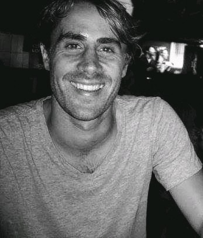
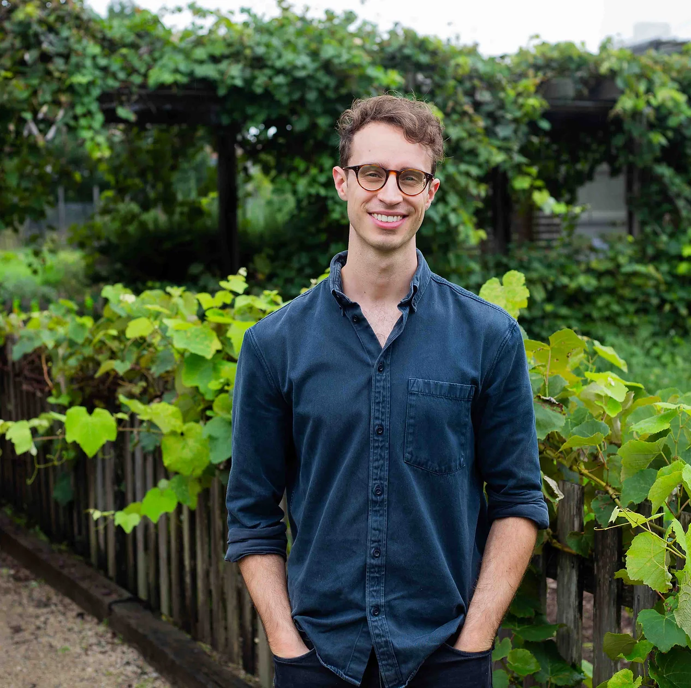
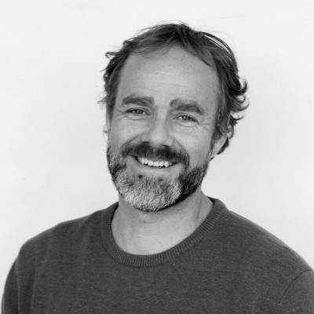

100s
SEO A/B tests run
Split tests and causal analyses that proved which changes moved organic traffic before engineering committed to a full rollout.

Head of SEO, Rome2RioSydney, Australia.
Senior technical SEO leadership for travel, marketplace and other large-catalogue platforms: causal A/B testing, insight into how AI search understands and presents your brand, and safe website migrations.
An engineer first, then a decade-long move into search: building the automation, auditing and testing that in-house SEO teams rely on.
Split tests and causal analyses that proved which changes moved organic traffic before engineering committed to a full rollout.
Hands-on with the code behind the site, with hundreds of bugs fixed along the way.
From SEO engineer to technical SEO team manager to Head of SEO.
Feedback from organisations I’ve advised as an SEO consultant, including pro bono work for a local charity.
“I would recommend Brad if you are looking for someone who never misses the details; his thorough, careful, and measured approach made all the difference to our organisation. The difference became so noticeable because the leads we get coming to our site are at least 3-4 times a day. Previously we had one a week!”

Jamie LovedayFoodlab Sydney“Working with Bradley has been a very pleasant and rewarding experience for our company. His in-depth knowledge in SEO and Website Structure has help deliver us the right business leads needed for growth. Not only has Bradley help us better position ourselves in the online marketplace, but he has also laid the foundations we needed to move forward with confidence.”

Carl AndersonNetwork Brokers“I was very lucky to connect with Brad when looking for a volunteer senior SEO specialist! He was not only happy to donate his time and expertise with a local charity, but he also provided tekFoundation with valuable feedback and insights that will help us expand our impact. Thank you Brad!”
Three areas where I work with executives and engineering to get from hypothesis to measured result.
Custom Python and R testing models, edge-worker routing and split-testing frameworks that show SEO ROI before full engineering rollout.
Assess Zero Click disintermediation risk, structure programmatic entity graphs, and protect brand visibility across conversational search engines.
Risk-managed governance for platforms of 1M+ pages, JavaScript rendering architectures and dynamic URL restructures.
Senior technical SEO guidance with an engineer’s hands-on approach, fitted around your team rather than added to it.
Taking on a small number of one-day-a-week retainers. Remote and asynchronous, working in Sydney time (AEST).